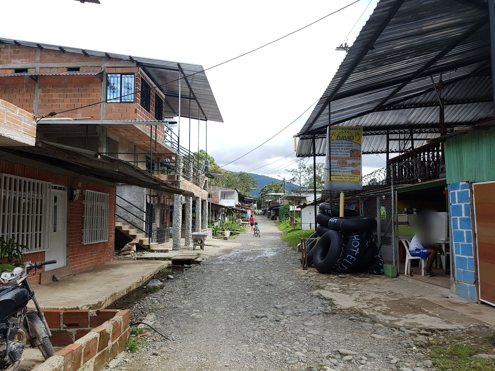
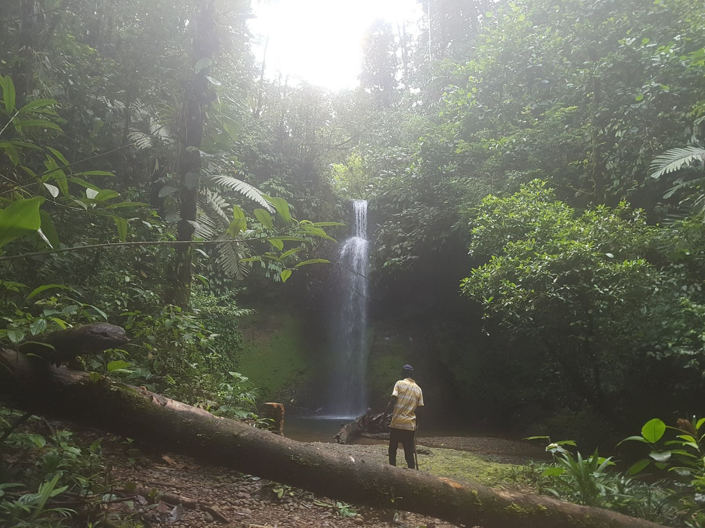

Colombia · Valle del Cauca · San Cipriano
San Cipriano in 2026: what to check before you go, and what the day was like
I spent a day in San Cipriano on December 15, 2017, coming from Buenaventura. That was nine years ago, so this is partly what I remember and photographed, and partly what I checked again in November 2026. The checked facts are marked with a source and a date. I did not find an official page for the reserve, so every figure below comes from news articles, and I say which ones disagree.
The day
San Cipriano is a village in a jungle reserve with no road to it. The last stretch is by brujita, a wooden platform on wheels that rides the old railway line and is pushed by a motorbike. I took one in. I do not remember where I boarded or what I paid, and I have no ticket. I also took a photo of a woman and a child on another brujita, and I am leaving it out because they did not agree to appear on a website.

The village is one gravel street with brick houses, small restaurants and hostels, and tractor tyres stacked outside, which are the tubes for the river. I blurred the face of a man sitting at a restaurant.

For the waterfalls I went with a local guide, a man in a yellow shirt with a stick, who walked ahead of me. I only have a photo of his back. I do not remember what I paid him. I was told it is easy to get lost on the way, and that is why I would take a guide again.


Down the river there were clear green pools, and one with a rope hanging over it. I stayed until at least 17:21, the time of my last video from the river. By 22:45 that night I was back in Cali, and I do not remember how I got there.

What to check before you go (November 2026)
- Two ways in. From Cali you take a bus toward Buenaventura and get off at one of two points: Córdoba, at about kilometre 26, or Zaragoza, where you cross the San Martín suspension bridge to reach a brujita. A news article from September 2024 says the communities themselves admit the bridge "is not in the best condition" (El Tiempo, September 27, 2024). Another from September 2025 describes both points (El Tiempo, September 9, 2025).
- The bus. A July 2024 article puts the Cali to Buenaventura bus at about two hours, with fares of 25,000 or 35,000 pesos depending on the size of the vehicle. It says to tell the driver to drop you at Córdoba, cross the highway and walk about 15 minutes down a road to the brujita stop, and that no bus goes all the way to San Cipriano (Semana, July 8, 2024). A May 2025 article gives the distance from Cali as about 106 km and two and a half hours by road (El País, May 23, 2025).
- The brujita. The September 2024 El Tiempo article gives 18,000 pesos for the round trip, about 20 minutes for 7 km. An October 2025 article says the ride takes about 30 minutes (Semana, October 1, 2025), and an August 2024 one says about 6 km (El País, August 8, 2024). I would take the figures as approximate and ask at the stop.
- The entrance fee. The September 2024 El Tiempo article gives 5,000 pesos to enter the reserve, which it calls the Reserva Forestal Protectora de los Ríos San Cipriano y Escalerete, of about 9,000 hectares. A 2015 guide gave 2,000 pesos (caliadventurer.com, August 4, 2015), so prices have moved. The August 2024 El País article gives 8,564 hectares for the reserve. I found no 2026 price.
- What there is to do. According to El Tiempo (September 2024), the reserve has eleven pools and two waterfalls, a butterfly house, bird watching and tubing down the river. A June 2025 article names the Cascada del Amor, the Charco La Balastrera and the Charco Oscuro, reached by trails (Blu Radio, June 16, 2025). Semana (October 2025) says tubing is offered when the river conditions are good.
- Rules. A ranger quoted by El Tiempo (September 2024) says tourism is allowed only in certain areas of the reserve, not in all of it, and that rangers patrol every month.
- The walk and the guide. The 2015 guide calls the hike to the waterfall semi-technical, about 30 to 45 minutes each way, and says not to go alone unless you know the way. It gave a guide at no more than about 10,000 pesos, and said it was unclear whether that was per person. That is eleven years old.
What I could not check
I found no current fee for a guide, for renting a tube, or for a room, and no opening hours or time of the last brujita out. The 2015 guide gave 17:00 for the last shuttle, which is old, and my own river video is later than that. I also did not check any official travel advisory for Buenaventura or the state of the rails and bridge today. Check these with your hostel or a local before you go, and carry cash: the 2015 guide says there are no cards and no cash machines in the village, and I did not find a newer source.
Is it worth it?
For me, yes. The ride in is unusual, the water is clear and green, and the waterfall is worth the walk. Go early, take a guide to the falls, and plan how you get back out before it gets dark.
The full chapter, with more photos and videos from the rails, the river and the evening in Cali, is in Members.